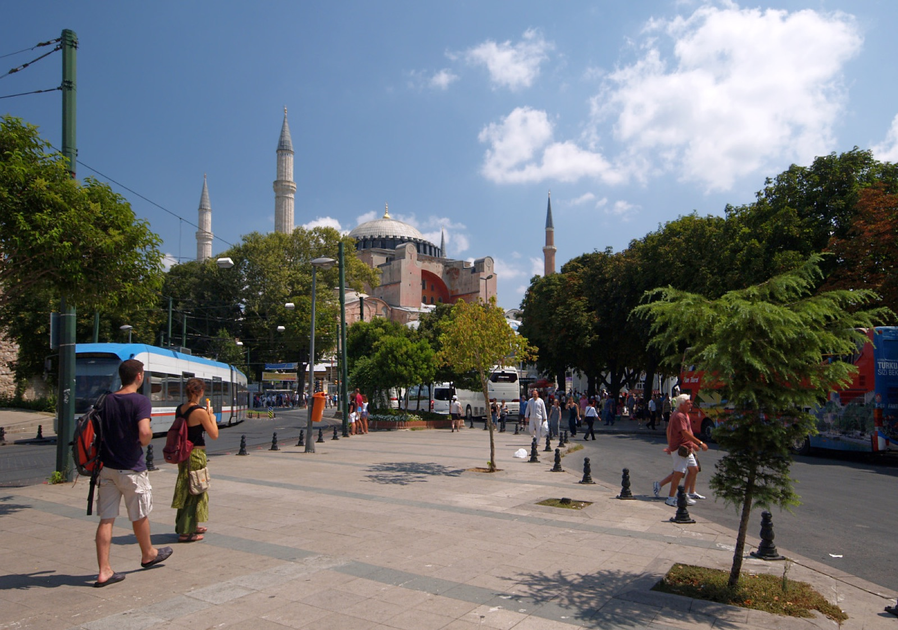

周末顺序已锁定
Day 1 为周六、Day 2 为周日，已避开大奖集市周日休息及多尔玛巴赫切宫周一闭馆。
上海 → 伊斯坦布尔 · 2026
CONSTANTINOPLE / İSTANBUL
10 月 30 日晚抵达，11 月 2 日返程。住在塔克西姆，用两条单向路线串起帝国旧城、当代艺术与博斯普鲁斯。
打开行程

四日行程 · THE ITINERARY
2026.10.30—11.02 · 点击任意一天展开精确时间线；点击景点名称进入专属详情页。
出发须知 · BEFORE YOU GO
Day 1 为周六、Day 2 为周日，已避开大奖集市周日休息及多尔玛巴赫切宫周一闭馆。
Day 1 向 Sirkeci 推进；Day 2 沿海岸向 Eminönü，再经 Karaköy、独立大街步行回酒店。
14:40 市营短线游船为当前官方班次。冬季时刻可能调整，建议 10 月中旬再次确认。